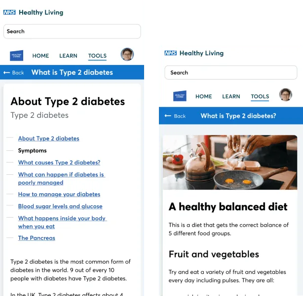
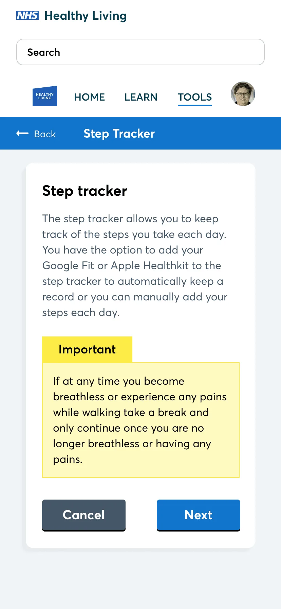
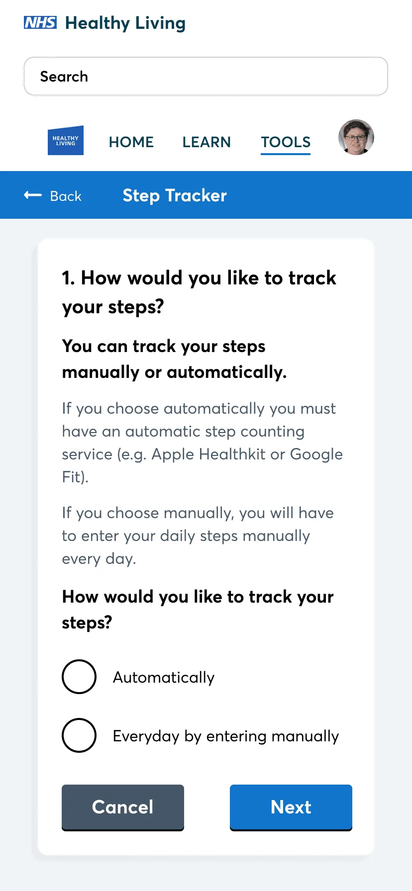
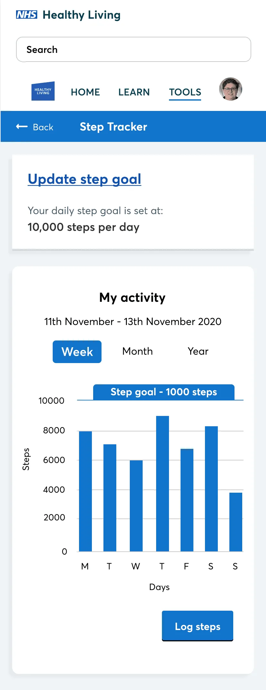
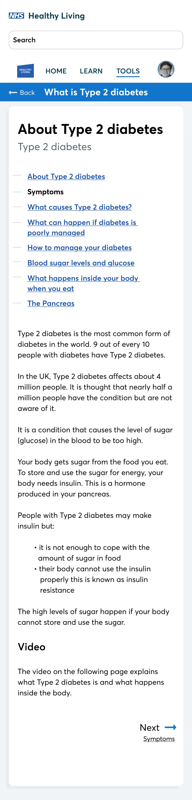
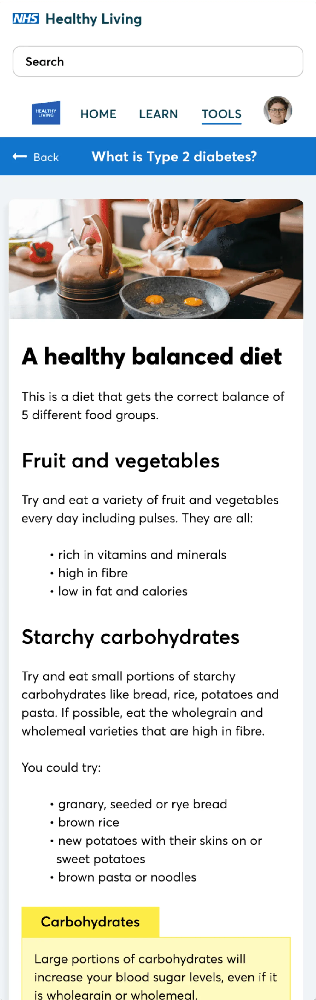
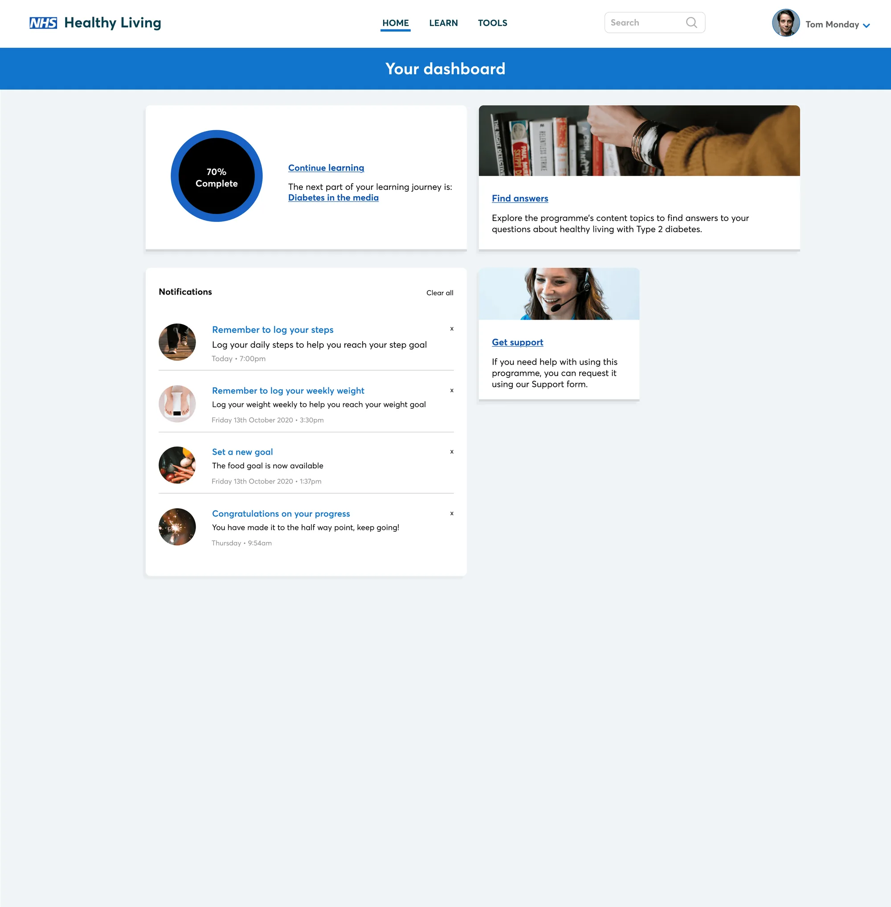

Product design · Changing Health x NHS
Changing Health & NHS: Healthy Living
Helping people take control of their Type 2 Diabetes through education, tracking and personalised support.

Overview
Healthy Living is a structured education programme for people living with Type 2 Diabetes. Delivered by Changing Health in partnership with the NHS, it’s one of the largest programmes of its kind.
The programme gives people the knowledge and tools to manage their condition day to day, from choosing healthier meals and getting more active, to content tailored to them by health experts and AI.
For me, it was a project that really mattered. Behind every screen was someone trying to look after their health, often while juggling everything else life throws at them.
The challenge
A Type 2 Diabetes diagnosis can be overwhelming. There’s a lot of information to take in, much of it clinical and hard to digest, and the changes people are asked to make affect everyday life.
We needed a programme that:
- explains the condition in plain, reassuring language
- fits into people’s lives rather than adding to the load
- keeps people motivated over weeks, not just days
- works for a broad audience with a wide range of ages, confidence with technology and access needs
Research
I took part in user interviews to understand how people living with Type 2 Diabetes track their condition and where they turn for information. These conversations gave the team vital insight into real routines, and the moments where people lost confidence or motivation.
We also ran usability testing on high-fidelity prototypes to catch friction points early, before they reached thousands of users.
Placing the person at the centre of every decision was something I learned on this project. It wasn’t just a requirement; it was the right way to work.
My role
Working alongside the Head of Product, I helped build out healthcare education programmes on the Changing Health platform for internal teams and external partners. This included:
- Mapping the journey: creating user flows and data flows to document how people moved through each programme
- Designing solutions: producing visual mockups and interactive prototypes for proposed UX/UI improvements
- Testing and iterating: creating the high-fidelity designs used in usability testing, and feeding the results into UX reviews
- Shaping what came next: helping scope new platform functionality based on review feedback
Key features
Step tracker
Being more active is one of the most effective ways to manage Type 2 Diabetes, so making activity easy to track was key. The step tracker setup asks people how they’d like to track their steps, then gives them a simple, motivating view of their progress each day.
-

Step tracker setup -

Choosing how to track steps -

Daily progress
Educational articles
Articles break the essentials into short, digestible reads, covering what Type 2 Diabetes is and what a healthy, balanced diet looks like. The aim was to inform without overwhelming, using clear language and a friendly, supportive tone.
-

About Type 2 Diabetes article. View full screen: About Type 2 Diabetes article -

A healthy balanced diet article. View full screen: A healthy balanced diet article


Across devices
The programme works on both mobile and desktop, so people can engage in whatever way suits them best.

Reflection
This stage of my career deepened my focus on user-centred design at scale, and it remains some of the most rewarding work I’ve done. It taught me that good design in healthcare isn’t about adding more. It’s about making the right thing feel simple.